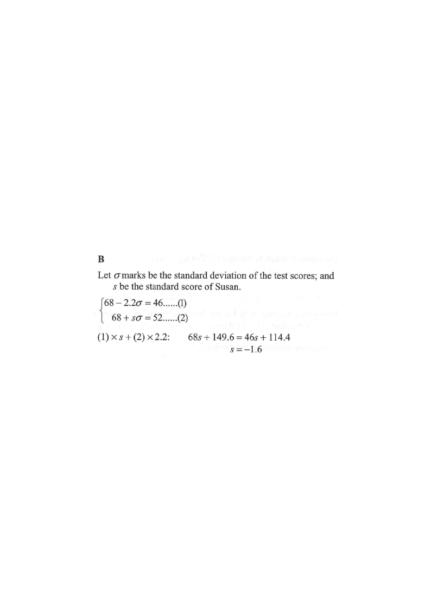

Step 1: Mark the mean (68 marks) and the known marks of Peter (46) and Susan (52).
In a test, the mean of the test scores is 68 marks. Peter gets 46 marks in the test and his standard score is −2.2. If Susan gets 52 marks in the test, then her standard score is

For a value $x$ with mean $\mu$ and standard deviation $\sigma$,
the standard score is
$z=\dfrac{x-\mu}{\sigma}$.
Peter: $x=46$, $z=-2.2$:
$\dfrac{46-68}{\sigma}=-2.2 \;\Rightarrow\; \sigma=\dfrac{-22}{-2.2}=10.$
Susan: $x=52$:
$z_S=\dfrac{52-68}{10}=\dfrac{-16}{10}=-1.6.$
Each $1\sigma = 10$ marks.
Peter: $68-2.2(10)=46$ ✓. Susan: $68-1.6(10)=52$ ✓.
Question. In a test, the mean mark is \(72\) and Peter obtains \(48\) marks with a standard score of \(-1.6\). If Susan obtains \(57\) marks in the same test, her standard score is
A. \(-0.8\) B. \(-1\) C. \(-1.2\) D. \(-1.5\)